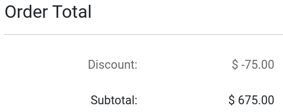

Proceso de pago¶
Puede personalizar los pasos para el pago, agregar más contenido con el creador de sitios web y activar funciones adicionales como pago rápido e iniciar sesión o registrarse al pagar.
Puede usar bloques de creación para agregar contenido a cualquier paso del proceso de pago. Para hacerlo, vaya a desde cualquier página de pago y ahí podrá arrastrar y soltar los bloques de creación a la página.
Nota
Tome en cuenta que el contenido que se agrega con los bloques de creación es específico para cada paso.
Pasos para el pago¶
Revisar orden: código de promoción (y subtotal)¶
Si activó la opción Descuentos y tarjetas de lealtad y regalo en los ajustes (), puede activar el campo Código promocional () desde cualquier página de pago. Los clientes entonces podrán canjear las tarjetas de regalo y los códigos promocionales al llegar al paso Revisar orden.
Además, podrá mostrar el subtotal con los descuentos aplicados, solo tiene que activar Mostrar descuento en el subtotal.
Dirección: campos B2B¶
Puede agregar los campos opcionales RFC y Nombre de la empresa al formulario de Dirección de facturación para clientes B2B en el paso Dirección. Para agregar los campos, vaya a desde cualquier página de pago y active la opción Mostrar campos B2B.
Solicitar información adicional (paso complementario)¶
Puede agregar un campo de información adicional para que el cliente le proporcione cualquier información adicional. Este paso lo puede agregar entre la dirección y la confirmación de la orden. Para hacerlo, vaya a desde cualquier página de pago y active la opción de paso adicional.

El paso Información adicional es un formulario en línea que está vinculado a la cotización o a la orden de venta del cliente. La información que se agregue durante este paso se puede encontrar en la cotización o en la orden de venta del cliente desde el backend en la aplicación Ventas.
Cuando esté activado, puede hacer clic en el botón Editar en la esquina superior derecha para quitar, agregar y modificar campos del formulario. Todas las opciones de personalización, así como el botón + campo para agregar campos nuevos, están disponibles en la parte inferior del menú de Personalización de la sección Campo.

Confirmar orden: términos y condiciones¶
Puede pedirle a los clientes que acepten sus Términos y condiciones para que se pueda confirmar su orden. Solo tiene que activar Aceptar términos y condiciones, para hacerlo, desde cualquier página de pago vaya a .

Finalización de compra exprés¶
Puede activar el botón Comprar ahora en la página de los productos, de esta forma el cliente irá de inmediato a la página de pago Confirmar pago en lugar de que el producto se agregue al carrito. Para hacer esto, vaya a y active la opción Comprar ahora. También puede activar el botón Comprar ahora desde la página de cualquier producto, solo vaya a en la sección Carrito.
Podrá encontrar este botón a un lado del botón Agregar al carrito en la página del producto.

Pago de invitados y usuarios que iniciaron sesión¶
Es posible agregar una política de pago para que los clientes puedan ya sea pagar como invitados o solo puedan pagar usuarios que hayan iniciado sesión. Los clientes también pueden pagar como invitados y tener la opción de registrarse después para poder rastrear su orden, si activó esta opción.
Para seleccionar una política vaya a y podrá elegir entre:
:guilabel:`Opcional: permite que los invitados realicen el pago y después se registren desde el correo de confirmación de la orden para poder rastrear su pedido.
Deshabilitar (comprar como invitado): los clientes solo pueden pagar como invitados.
Obligatorio (no se puede pagar como invitado): los clientes solo pueden pagar si iniciaron sesión antes.
Ver también
Restricción de acceso B2B¶
Si quiere restringir el pago a solo clientes B2B seleccionados debe activar la opción Obligatorio (no se puede pagar como invitado) y después vaya a . Seleccione el cliente al que le quiere dar acceso, haga clic en :menuselection:`Acción –> Otorgar acceso al portal `, y haga clic en :guilabel:`Otorgar acceso al portal `.
Truco
Los ajustes son específicos para el sitio web lo que significa que puede configurar un sitio web B2C donde permite el pago de invitados y otro sitio web para clientes B2B, donde el inicio de sesión sea obligatorio.
Nota
Los usuarios solo pueden tener un acceso al portal por correo electrónico. No es posible brindar acceso a dos portales diferentes con la misma dirección de correo.